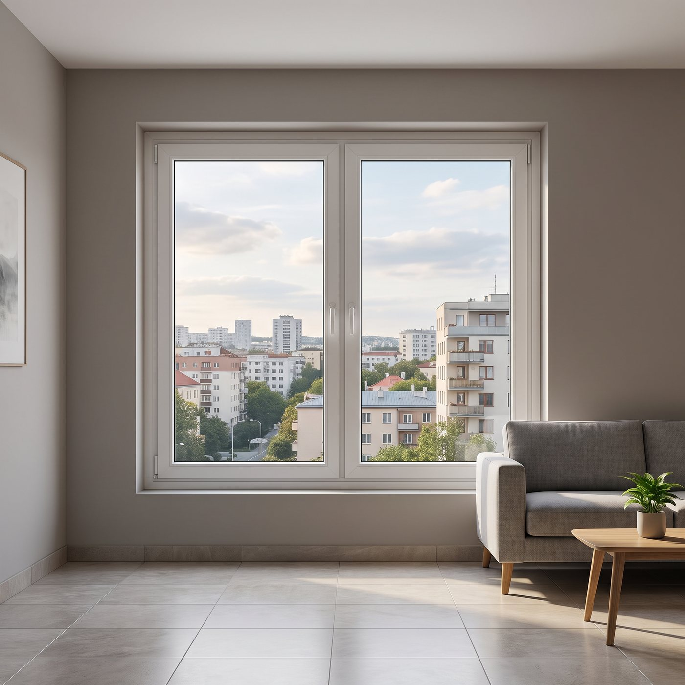
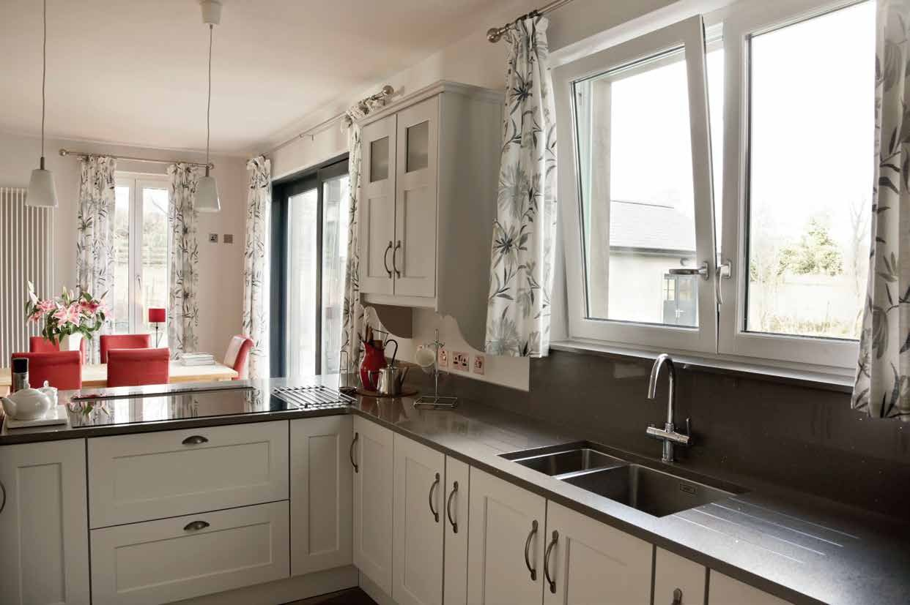
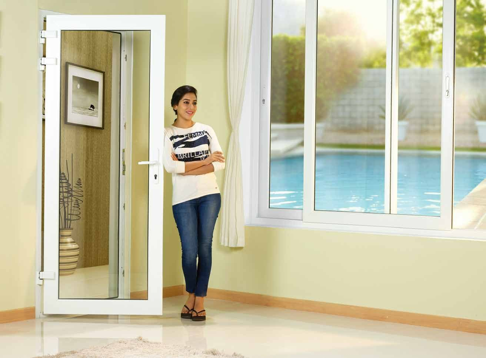
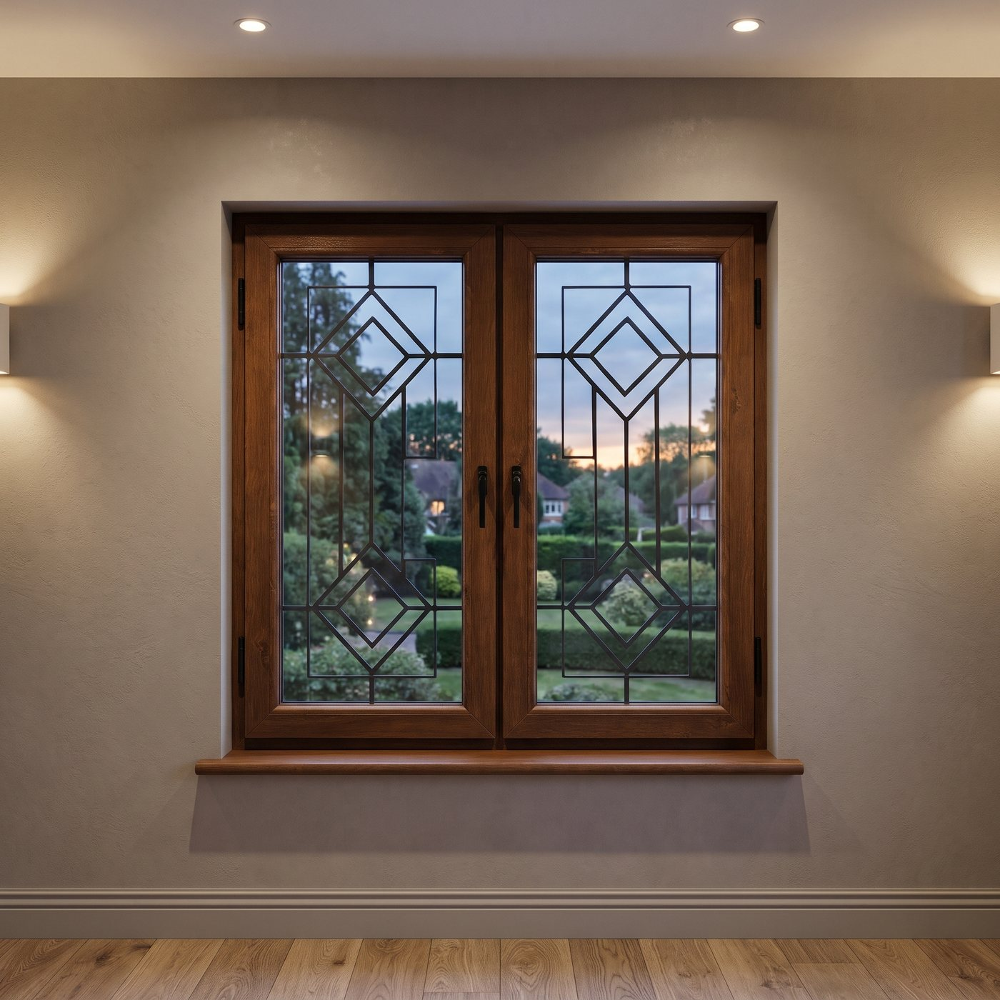
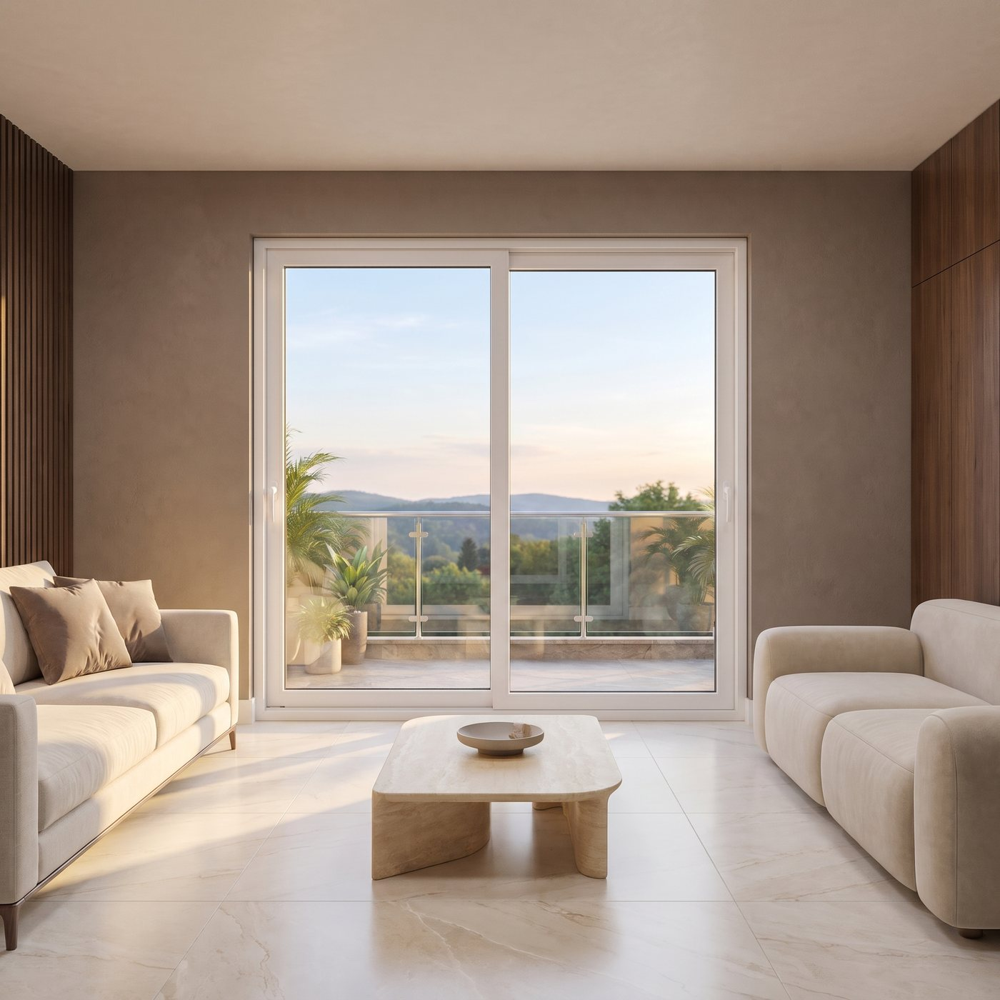

Sturdy
Multi-chambered profiles with 2.3–2.5 mm walls give frames the rigidity to hold glass true for years, with multi-point locking for security.
Built to hold

uPVC windows & doors
Prominance uPVC windows and doors are multi-chambered, weather-sealed systems engineered in Coimbatore for Indian heat, monsoon and street noise — sturdy, sound-proof and low-maintenance for the life of your home.
The short answer
A uPVC window is a frame extruded from rigid, unplasticised PVC with several internal chambers, reinforced and fitted with sealed glass.
It does not rust, rot or need repainting, it insulates better than bare metal, and it blocks noise and dust — which is why it suits Indian homes from coastal apartments to hill-side villas. Prominance makes its own profiles, so quality is controlled from the first blend to the final fit.
Annual production capacity at our Coimbatore plant
Manufacturing since — over a decade of extrusion experience
Cities served across 28 states in India
Hours of weather-ability testing on our profiles
Why uPVC
Every Prominance uPVC system is engineered around the way Indian homes are actually lived in — hot afternoons, heavy rain, busy roads and little time for upkeep.
Multi-chambered profiles with 2.3–2.5 mm walls give frames the rigidity to hold glass true for years, with multi-point locking for security.
Tested for 25,000+ hours of weather-ability. uPVC does not rust, swell or warp, so monsoon and summer sun leave it unchanged.
Tight seals, sealed chambers and the right glazing reduce outside noise by up to 40 dB — quiet bedrooms, even on a busy road.
Air-filled chambers slow heat moving through the frame, so rooms stay more comfortable and air-conditioning has less to do.
No painting, polishing or rust treatment. A soft cloth and mild soapy water keep the frames bright.
uPVC is fully recyclable: old profiles can be ground down and extruded again, keeping waste out of landfill.
The range
From hinged casements to wide sliding doors — each configuration is made to order for your openings, in the finishes and glazing you choose.

CasementHinged for a tight seal and full control of airflow — the everyday all-rounder.
 Sliding
SlidingSpace-saving sliders that frame the view without swinging into the room.

GridClassic grid patterns for bedrooms and traditional interiors.

Dark finishSlim, deep-toned frames for a bolder, more contemporary look.

Wood finishThe warmth of timber with none of the upkeep, with decorative glazing options.

DoorsWide, bright openings to balconies and terraces with smooth, quiet gliding.
Specifications
The figures below describe the Prominance uPVC profile range. Exact performance depends on the configuration, glass and installation you choose.
| Feature | Prominance uPVC |
|---|---|
| Material | Multi-chambered uPVC (unplasticised polyvinyl chloride) |
| Wall thickness | 2.3–2.5 mm across the specified profile range |
| Test standard | EN 12608 (uPVC profiles for windows and doors) |
| Weather-ability | 25,000+ hours of testing for long-term weather resistance |
| Noise reduction | Up to 40 dB, depending on glazing and installation |
| Glazing | Single, double and laminated glass options |
| Configurations | Casement, sliding, fixed and door systems — ask about others |
| Made in | Coimbatore, Tamil Nadu, India — manufacturing since 2011 |
| Availability | 28 states · 860+ cities across India |
Specifications are indicative. Our team will confirm the exact specification for your project in your written quote.
Inside the factory
Our profiles are blended, extruded and tested in-house at our Coimbatore plant, so the quality of your window is decided at the source.

Rows of European-technology extruders, one standard.
Coimbatore, Tamil Nadu · 22,000 MT a year01
PLC- and SCADA-controlled batching ensures accurate weighing, mixing and temperature control for a consistent blend.
02
In-house die design and specialist maintenance keep high-grade steel tooling production-ready and dimensions precise.
03
Imported extruders, advanced calibration and purified chilled water deliver consistent profiles with accurate dimensions.
04
European and Japanese lab equipment supports EN 12608 testing, backed by in-house R&D, 3D printing and prototyping.
Compare
Not sure which frame material is right? Here is an honest side-by-side for Indian homes.
| Feature | uPVC (Prominance) | Aluminium (Prominance) | Timber |
|---|---|---|---|
| Look | Clean, solid; white and wood-finish options | Slim sightlines, sleek premium finishes | Classic, natural grain |
| Maintenance | Wipe clean — no painting | Low — wipe clean | Regular polishing or painting |
| Heat & noise | Multi-chambers insulate; up to 40 dB reduction | Depends on glass and thermal design | Good, but varies with fit and seals |
| Monsoon & coastal | No rust, rot or swelling | No rust; corrosion-protected finishes | Can swell, warp or attract termites |
| Large glass spans | Good | Excellent | Limited |
| Best for | Bedrooms, living rooms, noisy roads, family homes | Large glass walls, balconies, contemporary design | Heritage and decorative projects |
Comparison reflects typical performance. See our aluminium range or help me choose.
How it works
One team looks after everything, so you deal with one partner from the first conversation to the last screw.
Tell us about your home, climate and budget. We help you compare systems and choose what fits.
Accurate site measurements mean every window is made to your exact openings.
Your windows are fabricated from profiles we extrude and test ourselves in Coimbatore.
Our team fits them, then stays on call with after-sales service and a dedicated helpline.
Answers
Any door is only as secure as its glass and locking. uPVC doors are usually fitted with laminated glass, which holds together instead of shattering, and with multi-point locking. That combination makes a forced entry very difficult. Ask our team for the glazing and lock options for your door.
uPVC stands for unplasticised polyvinyl chloride — a rigid, durable plastic. Prominance extrudes it into multi-chambered profiles with 2.3–2.5 mm walls, reinforces the frame and glazes it with sealed glass. The result does not rust, rot or need repainting.
It depends on the room. uPVC insulates better against heat and street noise and needs almost no maintenance, so it suits bedrooms, living rooms and busy roads. Aluminium allows slimmer frames and wider glass for a more architectural look. Many homes use both — see our comparison above.
Yes. Multi-chambered profiles, tight seals and the right glass reduce outside noise by up to 40 dB. The exact figure depends on the glazing you choose and how the window is installed, so tell us about your road or neighbourhood and we will recommend a specification.
They are built for it. Prominance profiles are tested for 25,000+ hours of weather-ability, and uPVC does not rust, swell or warp when it gets wet. The sealed chambers also slow heat transfer, so rooms stay more comfortable in summer.
Yes. uPVC is fully recyclable — old profiles can be collected, ground down and extruded again into new products, which keeps waste out of landfill.
Wipe the frames with a soft cloth and mild soapy water, rinse with clean water and dry. Avoid abrasive pads and harsh solvents so the surface stays smooth and bright. There is no painting or polishing to do.
Top-hung windows are hinged along the top edge and open outward from the bottom. They let air in even in light rain, and suit bathrooms, kitchens and any space where you want a secure opening.
There is no single price: it depends on size, configuration, glass and hardware. Prominance gives you a free consultation and a written quote once we understand your openings. Request a callback below, or call 1800 833 4500.
Yes. From the first call to the final fit, one team handles measurement, manufacture and installation, with after-sales support and a dedicated helpline.
Keep exploring

Let’s build something better
Planning uPVC windows or doors? Our team will help you choose the right configurations, glazing and finishes for your space.